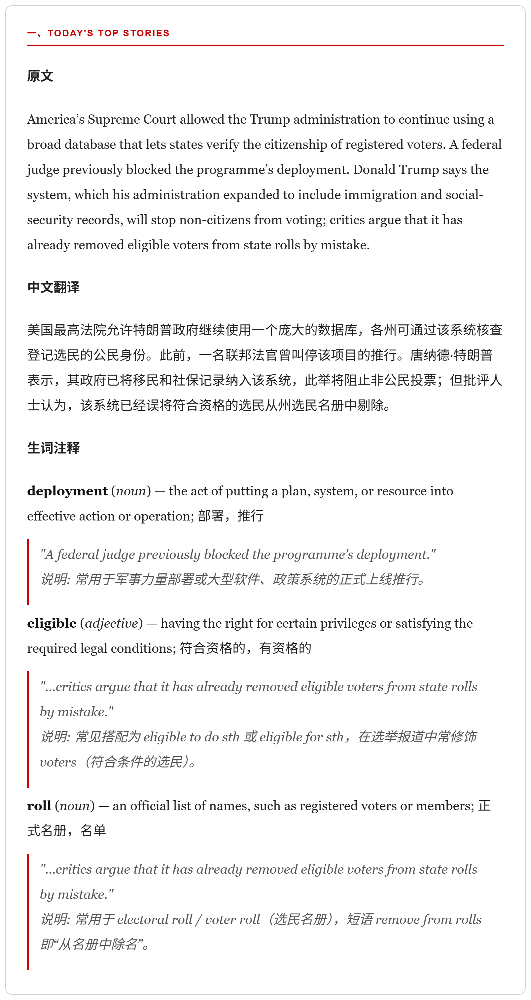

The daily Economist Espresso, turned into a bilingual study pack: translated, annotated, and read aloud into your inbox.
One story from a real issue, in the default study rhythm: English original → vocabulary explanation → original again → Chinese translation → original once more.
The same story as it arrives in the email.

Install and setup instructions live in the GitHub repository. Bring a Gmail account that receives the Espresso newsletter and a free Gemini API key.